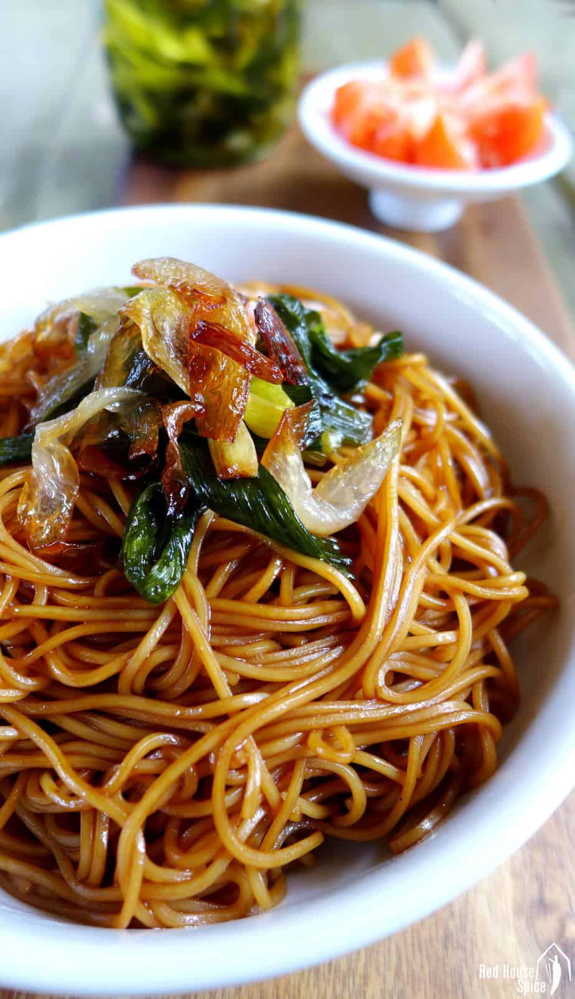

Spring Onion Oil Noodles

Originating in Shanghai, scallion oil noodles (aka spring onion oil noodles, 葱油拌面) is a humble dish with great flavour. In appearance, it’s as simple as can be: boiled noodles coated with a thin, brownish sauce and topped with fried spring onion. However, it can effortlessly excite your taste buds, a true example to prove the concept “Less is more”.
Ingredients
- Cooking oil (4 tablespoons)
- Spring onion (5 stalks)
- Wheat noodles (400g)
- Light soy sauce (2 tablespoons)
- Dark soy sauce (2 tablespoons)
Steps
- Pour oil in a wok. Add spring onion. Leave to simmer over a medium low heat until it starts to brown. Take the onion out and set aside.
- Add soy sauce and sugar to the oil. Cook until the sauce starts to bubble. Turn off the heat.
- Meanwhile, bring a large pot of water to a boil. Cook noodles following the instructions on the package. Drain then briefly rinse under running water.
- Place noodles in the wok. Stir well to evenly coat the noodles with the sauce.
- Portion out the noodles into 4 serving bowls. Top with fried spring onion.
Source
https://redhousespice.com/spring-onion-oil-noodles/#